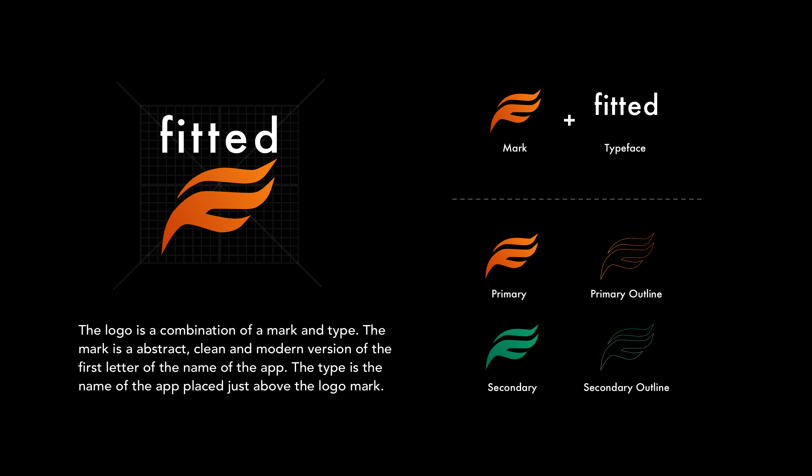
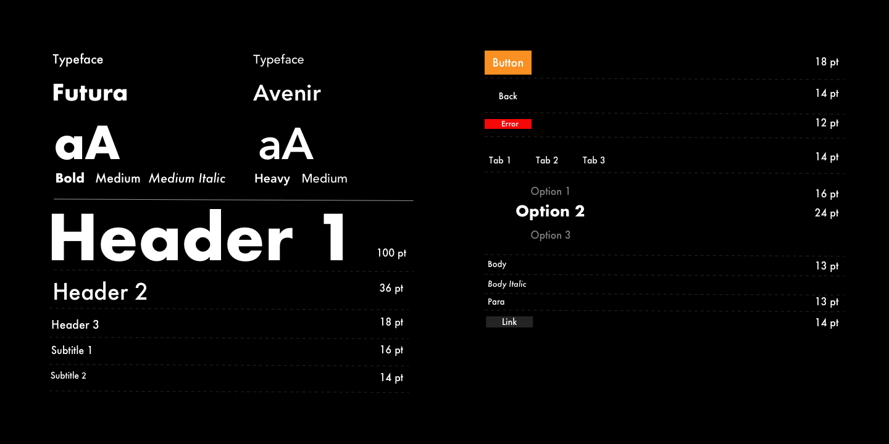
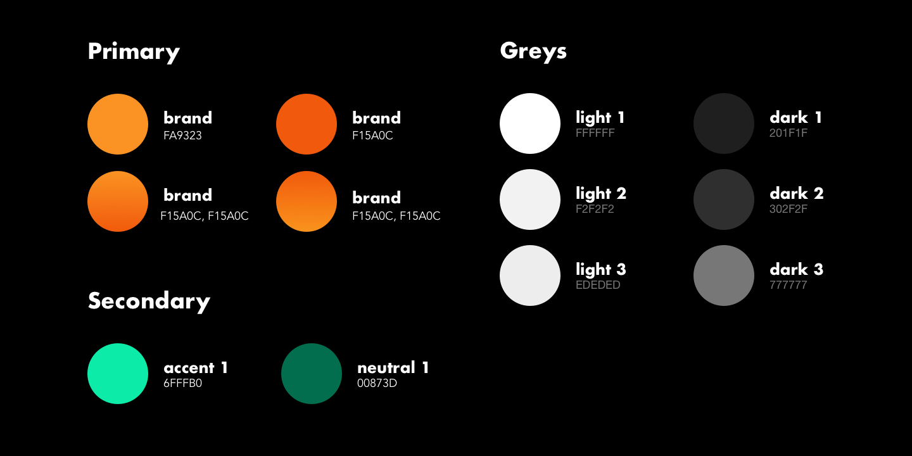
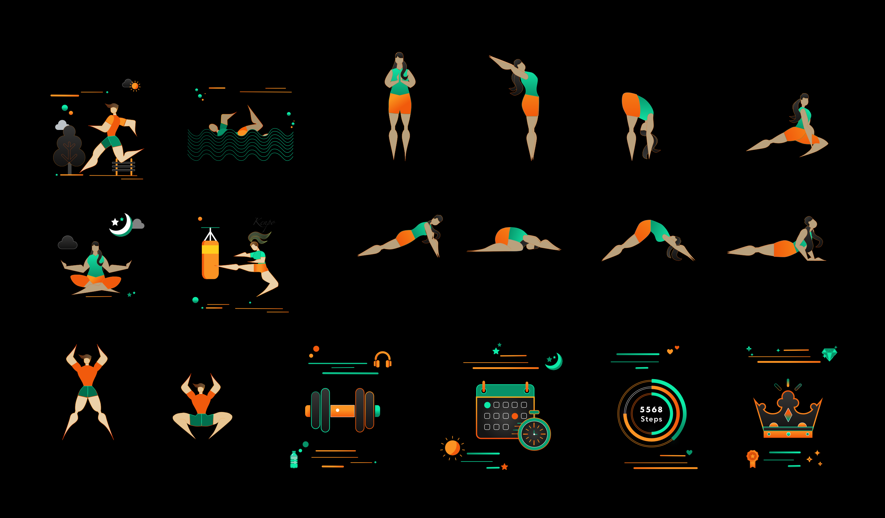
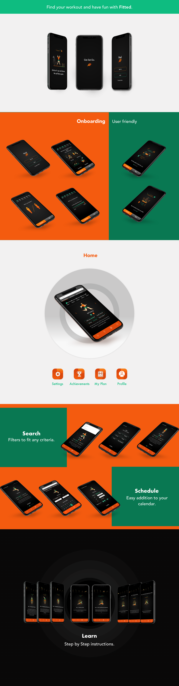

Fitted
Created for Careerfoundry’s UI for UX Designers course, Fitted is an app that is designed to guide users through an easy, fun and interactive journey to reach their fitness goals, whatever they may be.
My Role
UI/UX Designer - Wireframes, Prototypes, Web Design, Interaction & Motion Design.
Timeline
Jan 2020 - Apr 2020.
Tools
Photoshop, Sketch, Invision
View PrototypeProcess
User centered design was the focus for this app. I placed an emphasis on the users who are beginners and developed visual mood boards, and researched interactive web approaches. Then mapped out a user flow and began some quick sketching, which led to digitized wireframes and prototypes. I continued to refine the design based on feedback and research.
User Flow & Sketches

Low Fidelity Wireframes
Sketches were then digitized, and I began to get a feel for the architecture & design of the app.

Moodboards
I drew inspiration from sources of flat design, bright colors and a desire for a high level of web interactivity for the moodboards

Logo
Typography
The primary typeface, Futura has an appearance of efficiency and forwardness and uses simple geometric forms: near-perfect circles, triangles and squares. It is also easy to read from a distance. Avenir, an organic interpretation of the geometric style, even in color and suitable for extended text is used for body copy and accents or moments of discovery.
Color
Since boldness was a big theme with the design, I used a complementary set of lively colors from the moodboards. These choices signify activity, positivity, peace and change.
Illustrations
I used my own illustrations for this app, with heavy influence from flat(ish) design.
High Fidelity Screens
Responsive
I approached the design process with a Mobile first strategy, but the idea of Fitted is of an app that can handle multiple screen sizes well, so responsive and wearable design were constant aspects of the creative process.

Interactions & Gestures
Interactivity and motion exploration were high priority for the design of this app. I explored different masking and animation techniques to best achieve the goals of making Fitted fun and easy to use.


Animation
Onboarding
Fitted has an extensive, fun and interactive onboarding section that collects relevant information to personalize user experience. This section also offers a glimpse all the features that the app provides. The user can opt out of onboarding at any point in the process.
Scheduling
Users can search for exercises based on keywords and explore the exercise in detail on the Info page for a Step by Step breakdown. Users can then proceed to schedule their desired sessions easily by using the calendar to set up a workout plan.
Step By Step Instructions
Users can get a detailed breakdown of the steps involved in an exercise by using the Info button on the Exercise screens.